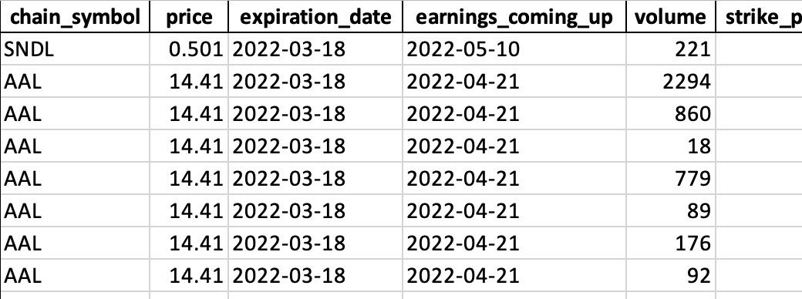

Market Data
Overview
In 2017, I entered the world of stock trading with my first trade: one share of Bank of America at $25.47. Since then, I've been developing trading strategies that I actively use on a weekly basis. As I started my professional career in 2019, I realized the need to optimize my time spent on market research for short-term trades. To address this, I created a Python program using an API that allowed me to automate tasks and regain time lost due to my full-time job.
Project Growth and Automation
Over the past few years, I've expanded my skill set by diving into frameworks, databases, and object-oriented programming in Python. Notably, I've enhanced my project by leveraging cloud computing and automation techniques. For instance, I created a cron job on Netlify to execute this program daily, ensuring I receive email updates each day the market is open.
In addition to my ongoing development journey, I'm currently engaged in a smaller-scale Python-based web app. This project revolves around automating holiday gift exchanges for groups, showcasing my proficiency in object-oriented programming. With the knowledge and experience gained from my previous project, I am eager to apply improved programming practices that align with my current expertise to elevate the functionality and efficiency of this application.
Modules
SMAs
Technical analysis has proven to be highly rewarding for me. By utilizing simple moving averages (SMAs), I can efficiently identify breakouts and trends across various stocks. Instead of spending countless hours navigating charts on ThinkorSwim, I have streamlined the process by automating it using an API provided by a broker. This module generates an Excel sheet and a set of charts highlighting tickers experiencing significant breakouts or trends. These valuable insights are promptly emailed to me, allowing me to conduct further research from an optimal starting point.
CSPs
In options trading, I employ multiple strategies, with one of my most frequently used being selling cash-secured puts (CSPs). It is crucial to note that selling options carries inherent risks and should always be approached with thorough research. To streamline this process, I have developed a significant module called CSP.py within the program. This module effectively filters out high-risk option contracts such as those with low volume or low chances of profit. By providing a starting point for in-depth research, it empowers me to make informed decisions, conveniently accessible in the CSP tab of the Excel sheet.
Positions
Lastly, the Positions module generates a dedicated spreadsheet tab that lists my current stock equity, option equity, and other pertinent information extracted from my broker account for me to review.
